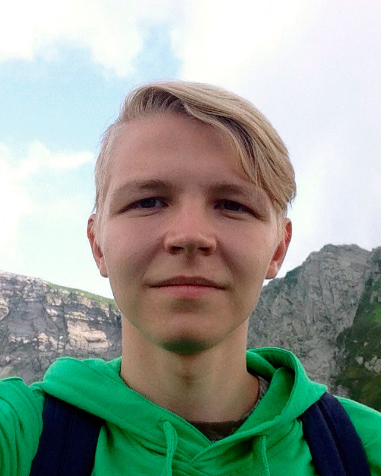

Шишкин Евгений Андреевич
Студент 3 курса МФТИ(ГУ)
| Мобильный телефон |
+7 (968) 952-24-31 |

|
| Эл. почта |
040796@gmail.com |
| Возраст |
20 лет (04.07.1996) |
| Проживание |
г. Долгопрудный(30 минут от Москвы) |
| Гражданство |
Россия |
| Языки |
Русский (родной)
Английский (со словарем) |
Образование
Высшее (не оконченное)
Московский физико-технический институт (государственный университет), кафедра компьютерной лингвистики.
Среднее общее
2014 – муниципальное автономное образовательное учереждение "Средняя общеобразовательная школа №9 им А.С.Пушкина
с углубленным изучением предметов физико‑математического цикла" г.Пермь.
Опыт работы
Лето 2016
Летний лагерь школы №9 г.Пермь
Воспитатель-преподаватель
- Участвовал в организации, проведении и проверке 5 устных и письменных олимпиад по математике и физике.
- Вел кружок "практика решения олимпидных задач" для 7 и 8 класса.
- Научил 10 класс решать стандартные задачи на перезарядку конденсаторов.
- Участвовал в подготовках к вечерним детским конкурсным мероприятиям.
Профессиональные навыки
- Unix системы - опытный пользователь.
- Языки программирования: C++14, python2, Java, C99.
- Web: html, css.
- Структуры данных: STL, кучи, деревья, строковые структуры.
- Алгоритмы: сотрировки, алгоритмы обхода графов,
алгоритмы поиска кратчайшего пути в графе, оптимизационные алгоритмы, алгоритмы работы с геометрией.
Мои интересы
- Data-mining
- Высоко производительные структуры данных.
- Серверное програмное обеспечение.
- Написание максимально читабельного кода.
Другие навыки
- Английский - intermediate (письменный, устный).
- Стрессоустйчивость, креативное мышление, нацеленность на результат,
умение брать ответсвенность на себя, коммуникабельность.
Социальные сети